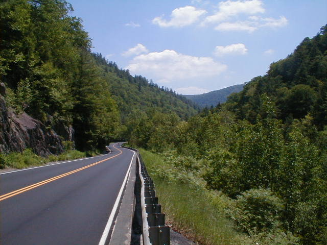

Day 46: June 27, Albany, NY to Greenfield, MAPrevious Day - Home - Next Day Photo of the DayThe view of the descent from the Berkshire Mountains in Massachusetts. Keegan's LogDay 46: June 27, Albany, NY to Greenfield, MA Mileage: 79.65 milesWeather: Hot and sunny, Light tailwind Vertical Climb: 5300 feet Riding Time: 5:40 Today we crossed the Berkshire Mountains on the way from Albany to Greenfield. Lots of climbing, well over 5,000 feet, but that meant lots of descents too. There was hardly a cloud in the sky all day, the sun warmed things pretty early, the temperatures were up to 90 degrees before 10:00. We also had a little tailwind today, it didn't help much on the hills but it felt good on the short 'flat' sections we had today. We rode through downtown Albany this morning, there was a decent to the Hudson River, which we crossed at just above sea level. From there we climbed the first mountain, reaching the peak at about 22 miles. We stopped at a rickety general store in Grafton for a break, then a short descent to the next hill. The climbing out east is steeper than the grades we had out west, the grades sometimes reached 10% at we ascended. The second climb of the day began at about 25 miles and took us to the first sag at 31 miles, reaching a height of 2,200 feet. The sag had a good view of the other side of the mountain, and of Massachusetts below. Less than a half mile after the sag we passed the Massachusetts state line, our last sand sprinkling of the trip. From there we had a nice 5 mile descent into Williamstown. We rode by Williams College along Route 2, then through the town itself. We also crossed the path of the Appalachian Trail, though you never would have known it had it not been on the cue sheet. Just after Williamstown we began the third climb, a 7 mile climb this time, to the summit of the Mohawk Trail. The second sag was about two-thirds of the way up the hill at the Wigwam Gift Shop, an unimpressive collection of souvenir shot glasses and authentic moccasins handmade in China. The summit was 2.6 miles past the sag, it felt great to reach the summit after a tough, hot climb. After the summit we had a great 8 mile descent, then it was pretty much flat to the town of Shelburne Falls at 70 miles into the ride. We stopped at an organic grocery store for lunch, I had an organic ham and cheese with organic chips and an organic root beer, afterward dad and I went to look for an inorganic Sprite. The town had a bridge of flowers, an old streetcar bridge converted into a flower-lined, river-crossing path. After a look around, we left to cover the last stretch to the hotel. We had been told that there wasn't much climbing after the summit, but we had quite a bit in the 9 mile stretch to Greenfield. The last mile was all downhill though, and after a close call with an inattentive driver, we found the Super 8. I took a shower and a nap instead of doing the laundry I needed to do, guess that'll have to wait until tomorrow night... Tomorrow is our last day of real riding (i.e. over 25 miles), we cover most of Massachusetts on our way to Lexington, near Boston. We have around 3,000 feet of climbing so it might not be a walk in the park, but I know we'll get there sooner or later. I can't believe we're almost there, Boston here we come! Phil's LogBoy, did I get responses on the Erie Canal song. For those of you New York chums, here is the best version, fresh from Kansas: I got a mule, her name is Sal.15 miles on the Erie Canal. She's a good old worker, And a good ole pal. 15 miles on the Erie Canal We've hauled some barges in our day, Filled with lumber, coal, and hay, And we know every inch of the way, From Albany to Buffalo. Low bridge, everybody down Low bridge for we're goin' through a town And you'll always know your neighbor, you'll always know your pal If you've ever navigated on the Erie Canal. Our ride today continued along the Mohawk Trail through Albany. The Hudson River was much bigger than expected, I remember that Henry Hudson went a long way up it before discovering that it was fresh, and not the way to the west coast (hardly!) I envisioned his old sailing ship in the water south of the bridge, now home of much industry, and the Watervliet Army Arsenal, which probably has been there for hundreds of years. Our route then began the climb, at first out of the Hudson Valley. The Massachusetts line soon followed and we rolled into Williamstown. This is a lovely green Massachusetts college town, which I had remembered vaguely from visiting my friend Dale who was graduated from Williams. I can understand why he stays close to the school and active in the alumni association. We then crossed the Appalachian Trail, which wanders down Phelps Avenue and goes up a little concrete walkway and back into the Berkshires. Any who have not read Bill Bryson's "A Walk In The Woods" on the Appalachian Trail should do so! More climbing lay ahead LOTS more climbing. Tracy, our wonderful "host" had written our names in sidewalk chalk on the road urging us on, and provided her full smile incentives of cheer as we rode on. She's a BIG part of what makes this trip so good. (www.crossroadscycling.com) But here, rather than ascending to the high plains, we get to go back down hill, and had a good time doing so. The Berkshires, through which we passed, are lovely old mountains. The vistas were sometimes as wide as those in Arizona, but forested. Shelbune Falls was the home of a wonderful organic grocery and deli, and Keegan and I stopped for lunch and Journey sodas. Truthfully the veggie burger was a little wet, but the place had the most interesting restroom on the tour! Tomorrow is our last full day of riding. Too bad we are running out of America... |
{kind=link}